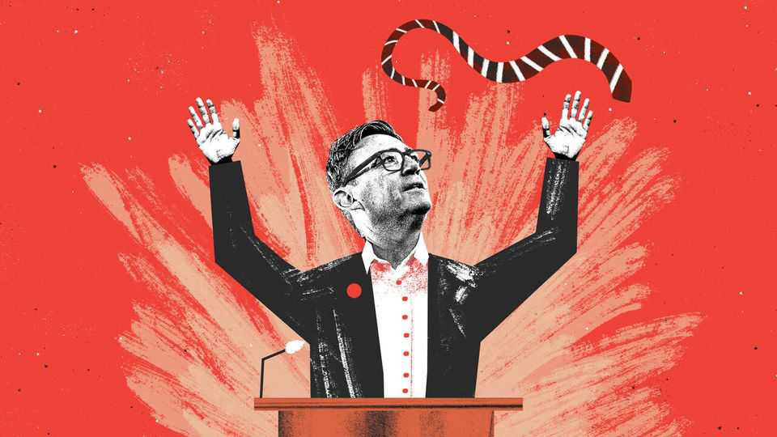

Andy Burnham, faux heretic
Britain’s radical prime minister has some very orthodox ideas

Oct 1st 2026
ANDY BURNHAM addressed his party’s conference in Liverpool as a heretic. He had come, he said more than once, to say what none of his predecessors dared. He was “an outsider from the Westminster club”. He would be “the first prime minister to make a break with politics as usual”. Forty years of consensus? Shattered. “I have to break the mould today,” he said.
And heresies, it seemed, were spoken. He railed against privatisation. He broached taboos: electoral reform, loosening the state pension’s “triple lock”, rejoining the European Union. The verdict was rapturous, for Britain is tired of stasis and hungry for change.
Greater scepticism is in order. This is a golden age for the faux heretics. The biggest podcasters (think Jordan Peterson, or Owen Jones) present as dissidents while offering views that are often bland, crowd-pleasing or even dominant. So with Mr Burnham. The big ideas that propel him are wearily familiar, shared among most of the six prime ministers who have governed Britain in the past decade. Policies recur word for word. Mr Burnham is less a heretic than a keeper of the new orthodoxy, “post-liberalism”.
The real mould-breaker was Theresa May and her conference speech of October 2016. In an epic overcorrection, she took Brexit as a rebuke to the economic and social liberalism that had driven policy since Margaret Thatcher. Out went what Lady May later called “untrammelled free markets”; in came interventionism and price controls. Out went “the cult of selfish individualism”; in came the rhetoric of family, place and nation. Her premiership was a disaster but her intellectual victory has been total.
The leitmotif of post-liberalism has been “take back control”. Mr Burnham cited “controls” 24 times as he promised to intervene in energy, housing and transport markets. But claiming Vote Leave’s slogan for dirigiste ends is not the original twist it appears. Sir Keir Starmer, his predecessor, made an identical anti-market argument in the same hall two years earlier.
Mr Burnham says, with heretical flourish, that his economic priority is reindustrialisation. And so a manufacturing sector that accounts for 8% of Britain’s gdp is set for its fourth industrial strategy in a decade. He promises to “Buy British” with a tweaked procurement regime. Boris Johnson and Sir Keir made the same protectionist promise; both soon met the constraints of Britain’s international procurement treaties.
Apprenticeships are the jazz standard of industrial policy. Just as every great has a version of “Round Midnight”, so every post-liberal prime minister declares themself the first to care about practically minded teenagers in oily overalls. “For too long in this country, students have been told that you must take the academic path to do well and to be respected,” says Mr Burnham. Or as Sir Keir riffed: “For too long, success has been measured by how many young people go to university.” Or, in Lady May’s rendition: “For too long in this country, technical excellence has not been valued as highly as academic success.” For too long, the sector has suffered less from neglect than from hyperactive policymaking.
Mr Burnham returned to Westminster after winning a by-election in Makerfield, a Brexit-leaning seat in north-west England. It was the sort of place “long forgotten by national politics”, he said, heretically. Yet what Mr Johnson called the “forgotten people and the left-behind towns” of industrial England have been the axis on which electoral politics has turned for a decade. Hardly overlooked, party strategists have thought of little else.
Mr Burnham would be more heretical if he were more urgent. But, like his predecessors, he has deferred the hard choices. His mooted change to the voting system would not take effect until after the next election, in the 2030s. He is on the fence about expanding Heathrow Airport, in limbo for decades.
His boldest promise is to fund adult social care by trimming growth of the state pension—again, after the election. If he does it he will deserve praise. But had others really overlooked social care? Lady May destroyed her premiership with an unpopular pledge to fund it through a levy on assets; Mr Johnson tried to bring in a new payroll tax. The issue has foundered not for lack of attention, but because it involves fights over huge sums of cash.
And then there is Europe. Mr Burnham said he would host an open debate on Britain’s future with the European Union, with rejoining an option. If that followed, history would remember him as a visionary. But the options are well known and for a decade ministers have bounced between the imperatives of sovereignty and growth like wasps in a jam jar. Will another debate within a divided cabinet over the merits of the Turkey model resolve Britain’s strategic dilemma? Lady May might have doubts.
What is there to show for a decade of post-liberal orthodoxy? Curiously little. Services are a bigger share of the economy. University enrolments are up; apprenticeships are down. If globalisation has gone too far then no one has told the British consumer, who, since the referendum, has taken to driving a Chinese Jaecoo and shopping through Shein and Temu.
Still, the era is not without its consequences. Mr Burnham railed at the fat cats who, he said, had plundered the people’s wealth through privatisation. This echoed the words that launched the post-liberal revolution: Lady May turned on the footloose investor class who she thought paid too little deference to the locals. “If you believe you’re a citizen of the world, you’re a citizen of nowhere,” she said. And how, precisely, is that going? A number of those citizens of nowhere are now citizens of less choosy tax jurisdictions, such as Greece. Nothing said in Liverpool seems likely to tempt them back. It’s hard to say whether Mr Burnham would call that a defeat, or, in heretical form, a triumph. ■